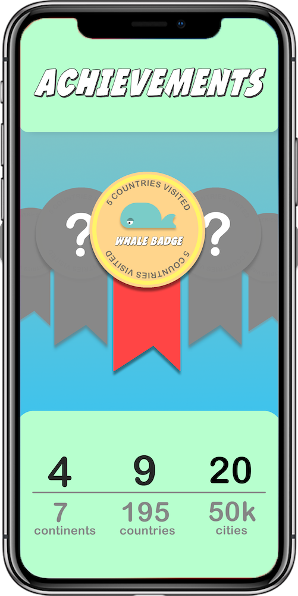

interface.


Travel apps often run the risk of being boring. Too much text or not enough function, most journal apps are centred around a scroll feed with little else to offer. My goal with travel tracker is to make travel journaling a fun and simple experience that records your trips using GPS data and seamless journal entry.
The concept is simple - every country you visit, your map gets filled in. See a visual interpretation of your progress while you conquer the world. Zoom in to each country and revisit your experience - follow a road-map of the routes you travelled, and all your photos geo-tagged and ordered by location. These things are all recorded automatically, without needing to open the app.
If you are currently travelling, the app makes it easy to search for things to do in the area including restaurants and upcoming events, and you can track these activities by simply selecting add on your journal, choosing the type of activity, name it and a date. No pressure to write anything long or meaningful, Travel Tracker is focused on visual presentation.
On top of retracing your foot steps and grouping your photos, Travel Tracker sees travelling the world from the perspective of a mobile game, with stats and achievements based on what number of the total continents/ countries and cities that you’ve visited. This keeps the app engaging and encourages users to keep on exploring.
A promotional poster I designed to demonstrate how the app works and invoke a desire to explore.
https://www.polarsteps.com/
https://bonjourn.al/
https://tubikstudio.com/mobile-ui-design-15-basic-types-of-screens/
https://itunes.apple.com/nz/genre/ios/id36?mt=8
https://www.journohq.com/
https://www.travelchinacheaper.com/best-travel-journal-app-guide
https://www.spotify.com/nz/
https://www.headspace.com/